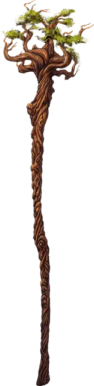

Посох леса
Staff of the Woodlands
Посох, редкий (требуется настройка друидом)

Рекомендованная стоимость 501-5 000 зм
Этот посох можно использовать как магический боевой посох, предоставляющий бонус +2 к броскам атаки и урона им. Держа его, вы получаете бонус +2 к броскам атаки заклинаниями.
У посоха есть 10 зарядов для описанных ниже свойств. Он ежедневно восстанавливает 1к6 + 4 заряда на рассвете. Если вы истратили последний заряд, бросьте к20. Если выпадет «1», посох теряет все свои свойства и становится немагическим боевым посохом.
Заклинания. Вы можете действием потратить 1 или несколько зарядов посоха, чтобы наложить им одно из следующих заклинания, используя свою Сл спасброска от заклинания: дружба с животными [animal friendship] (1 заряд), дубовая кора [barkskin] (2 заряда), поиск животных или растений [locate animals or plants] (2 заряда), пробуждение разума [awaken] (5 зарядов), разговор с животными [speak with animals] (1 заряд), разговор с растениями [speak with plants] (3 заряда) или терновая стена [wall of thorns] (6 зарядов).
Вы также можете действием накладывать посохом заклинание бесследное передвижение [pass without trace], не тратя зарядов.
Древесный облик. Вы можете действием воткнуть посох в плодородную землю и потратить 1 заряд, чтобы превратить посох в здоровое дерево. Высота дерева 60 футов, диаметр ствола — 5 футов, а ветви на макушке раскинуты в радиусе 20 футов. Это дерево выглядит обычным, но излучает слабую магию школы Преобразования, если становится целью обнаружения магии [detect magic]. Прикоснувшись к дереву и произнеся действием командное слово, вы возвращаете посоху его обычный облик. Все находящиеся на дереве существа при этом падают.